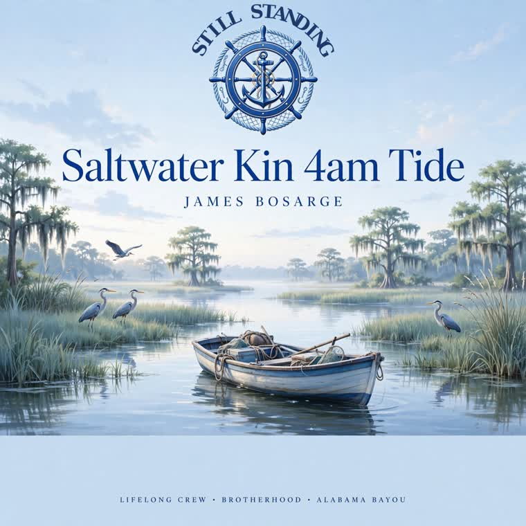

Only the songs that belong to this water
This is not a storefront for the whole catalog — the full music lives at Still Standing Records. This page holds only the songs singled out for Heron Bay: the ones on and around Petit Bois Pass and this working water.

Saltwater Kin 4am Tide
James Albert Bosarge Jr. — the HBH anthem
The 4 AM tide doesn't wait on anybody. This is the song of the kin who work it — the boats out of Heron Bay and Bayou La Batre heading for Petit Bois Pass in the dark, the ones who came home, and the ones who didn't come home the same. If you grew up on this water, you already know.
More songs of this water will be added here only as they are singled out for this page. Everything else lives at Still Standing Records and the Still Standing store.
Let us pray.